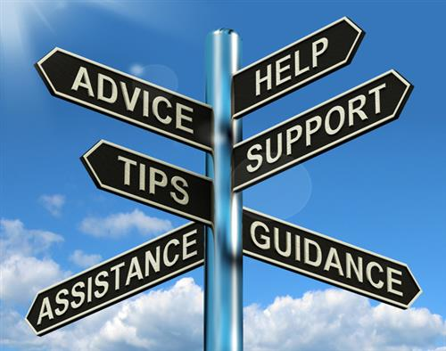

My Story
When we brought home our second child from the hospital, our eldest stopped talking. He would not start talking till he was 5 years old.
About that same time, we got the official diagnosis that he had autism. 6 months later, we were told our daughter also had a lot of early warning signs for autism and we should start intervention treatments as soon as possible.
My wife was a superhero through this time in our life. She went to countless meetings with school officials, state agencies, doctors, medical specialists, homeopathic specialists, and every therapist under the sun you can think of. We had no idea what to do, where to get help, or how we would move forward.
Thankfully, we learned that the state of Arizona has a Division of Developmental Disabilities (DDD) that had a lot of answers. We were able to get additional insurance called AHCCCS (pronounced access, and stands for Arizona Health Care Cost Containment System). This coupled with private health insurance gave us access to all the help we needed along with respite care services.
Our case workers asked us questions we didn't know we needed answers to. They helped us get into programs that were funded by the state and walked us through what we needed to do with the schools. Simply put they were a life saver.
Now, fast forward 15 years, and our two now-adult children with autism have graduated from high school and are serving missions and working at fulfilling employment. We are here to tell you that you can do this! Everything will not always be perfect, but it will work out and you can get the help you need so your children can live their best life.
We hope this site gives you the hope and knowledge to help you take the next step.